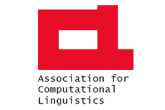

SIGGEN

ACL Special Interest Group on Natural Language Generation
Mailing List
Joining the SIGGEN mailing list:
To sign up, view preferences, change preferences, or unsubscribe, go to:
http://www.jiscmail.ac.uk/SIGGEN
If there are any issues, e-mail: siggen-webmaster (ta) aclweb (dot) org.
Posting messages to the mailing list
Please join the mailing list first (see above). Then you may use the email alias siggen-list (at) aclweb (dot) org to post e-mails to the list
Board
The SIGGEN board is made up of the following people:
- elected in December 2022 for the period from 1st January 2023 to 31st December 2026
- elected in December 2022 for the period from 1st January 2023 to 31st December 2026
- elected in December 2024 for the period from 1st January 2025 to 31st December 2028
- elected in December 2024 for the period from 1st January 2025 to 31st December 2028
- elected in December 2024 for the period from 1st January 2025 to 31st December 2026
To contact the entire board, please use the email alias: siggenboard (at) googlegroups (dot) com.